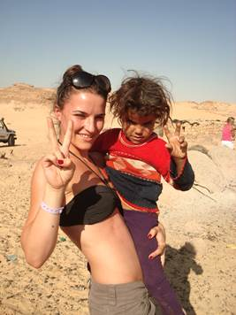
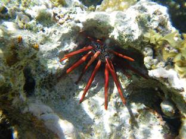

Tijdens het middelbaar heb ik ‘Wetenschappen optie Sport’ gestudeerd. Over het algemeen deed ik het zeer goed, buiten mijn vierde middelbaar. Ik heb dit jaar namelijk een keer overgedaan. Na het middelbaar ben ik meteen Chemie gaan studeren aan de Katholieke Hogeschool in Leuven. Na enkele weken ben ik met deze studie gestopt omdat de richting zeer zwaar was, en omdat de leerstof met toch niet zo hard aansprak. Omdat ik niet wist wat ik later wou gaan doen, ben ik beginnen werken in een juwelenwinkel in Leuven. Tegelijkertijd volgde ik een cursus als schoonheidsspecialste in Antwerpen. Na een jaar, toen ik mijn cursus succesvol heb beëindigd, heb ik besloten mijn studies weer op te nemen. Na enkele dagen van “research”, heb ik me ingeschreven in de richting ‘Office Management optie Event- en Projectmanagement’.
Tijdens het middelbaar heb ik ‘Wetenschappen optie Sport’ gestudeerd. Over het algemeen deed ik het zeer goed, buiten mijn vierde middelbaar. Ik heb dit jaar namelijk een keer overgedaan. Na het middelbaar ben ik meteen Chemie gaan studeren aan de Katholieke Hogeschool in Leuven. Na enkele weken ben ik met deze studie gestopt omdat de richting zeer zwaar was, en omdat de leerstof met toch niet zo hard aansprak. Omdat ik niet wist wat ik later wou gaan doen, ben ik beginnen werken in een juwelenwinkel in Leuven. Tegelijkertijd volgde ik een cursus als schoonheidsspecialste in Antwerpen. Na een jaar, toen ik mijn cursus succesvol heb beëindigd, heb ik besloten mijn studies weer op te nemen. Na enkele dagen van “research”, heb ik me ingeschreven in de richting ‘Office Management optie Event- en Projectmanagement’.
Vroeger had ik veel hobby’s zoals op stap gaan met vriendinnen of lekker lang voor de tv hangen, maar ook dansen, yoga, kickboxen, atletiek, zwemmen en fitness lagen in het verlengde van mijn intressesfeer. Sinds ik gestart ben met werken en studeren, vind ik jammer genoeg de tijd niet meer om al deze sporten uit te oefenen. Enkel voor tv hangen, ben ik niet verleerd.
 Hoe dan ook, mijn grootste passie is reizen. Vroeger reisde ik veel met mijn ouders en broers. Elke jaar genoten we van een winter- en zomervakantie. In de winter gingen en skieën of snowboarden in Frankrijk, en in de zomer gingen we surfen in Spanje. De mooiste herinneringen heb ik te danken aan een doortocht in Amerika toen ik twaalf jaar oud was. We reisden naar het Westen van de Verenigde Naties om een tour te maken langs verschillende natuurparken zoals Death Valley, de Grand Canyon, Bryce Canyon en andere “attracties” zoals Las Vegas, Santa Fe, Los Angeles en San Francisco.
 De laatste jaren reis ik voornamelijk met vrienden en vriendinnen en zo heb ik ook hele mooie herinneringen aan mijn vakantie in Egypte, twee zomers geleden. Egypte is een zeer fascinerend land wat betreft cultuur en watersporten zoals duiken en snorkelen. Ook hebben we tijdens deze vakantie een safari door de woestijn gemaakt, waar we kennis konden maken met de Bedoeïenen, Arabische woestijnbewoners.
Tot slot kan ik jullie nog vertellen dat ik een enorme verslaving heb aan pizza, chocolade en Belgische frietjes en dat ik een kat heb die luistert naar de naam ‘Tipsy’.
Gepost door: Birte Teeuwen